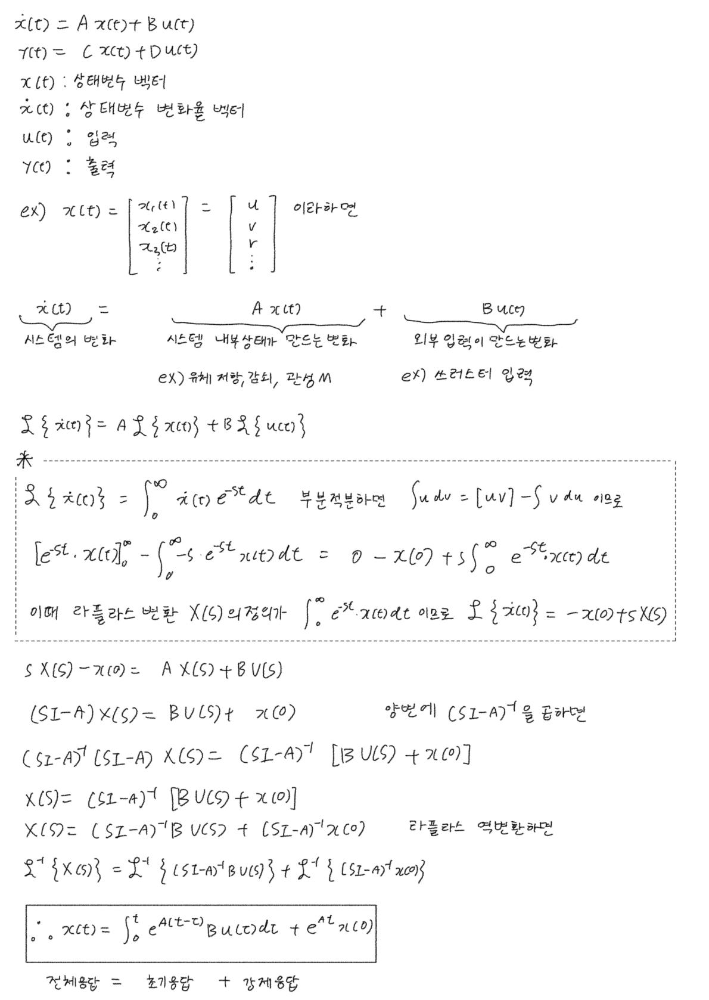
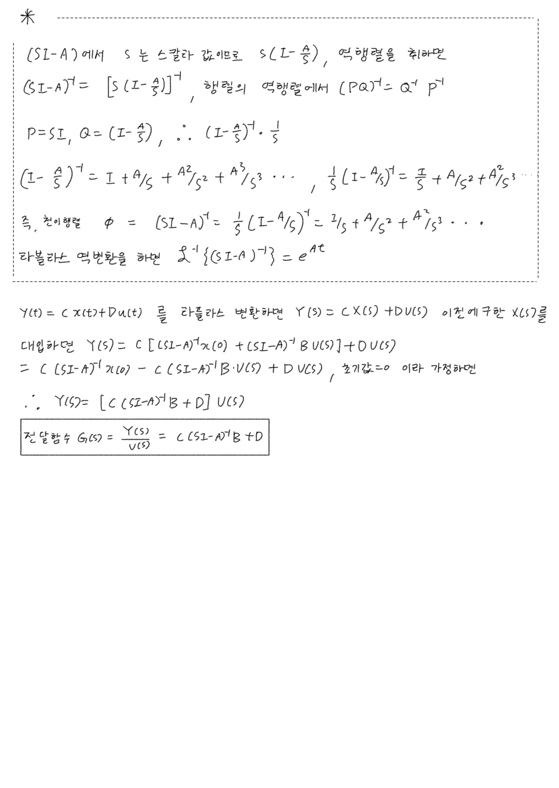

Transfer Function
한 줄로
LTI 시스템을 영초기조건 가정 하의 입출력 비율 로 표현한 것. 해석적 해법과 주파수영역 도구를 얻는 대신, 선형성·영초기조건·입출력 관계만이라는 제약을 진다.
어디에 앉는가 — 모델화 단계의 산출물이면서 동시에 해법 경로를 바꾼다. 6-DOF Marine Craft Model 같은 비선형 모델을 선형화해야 여기로 넘어올 수 있다.
왜 필요한가
루트로커스도 보드선도도 이득·위상여유도 전달함수가 있어야 그릴 수 있다. 주파수영역 설계 도구 전체의 입장권이다.
출발점이 된 질문 — 전달함수는 어느 칸에 들어가는가
2026-01-12 에서 남긴 질문:
문제해결 알고리즘: 현실의 시스템 → 시스템 모델화(s-function, state-eq, 블록선도) → 수치해석(오일러, RK45) → 해 구하기. 여기서 전달함수가 어디에 속하는가? 강의자료에는 시스템 모델화에 속하는데, 전달함수는 수치해석 없이도 해를 구할 수 있고, 비선형 모델에서는 존재할 수 없다. 또한 초기조건도 존재하지 않는다.
답: 모델화 단계가 맞다. 단, 그 안의 특수한 부분집합이다.
세 가지 위화감은 모두 같은 뿌리에서 나온다 — 라플라스 변환은 선형 연산자다.
흐름도를 고치면:
현실 시스템
│ 모델화
▼
미분방정식 (ODE) / 상태방정식 ← 여기까지가 "모델화"
│
├─ 일반적인 경우 (비선형 포함) ──→ 수치해석 (Euler, RK45) ──→ 수치 해
│
└─ LTI + 영초기조건 ──→ 라플라스 변환 ──→ 전달함수 ──→ 역변환 ──→ 해석 해
① 수치해석 없이 풀리는 이유 — 미분이 곱셈이 되니까
미분방정식이 에 대한 대수방정식이 된다. 대수는 손으로 풀 수 있으므로, 수치적분 대신 부분분수 전개 + 역변환으로 닫힌 해를 얻는다.
단서: 입력이 step, ramp, impulse처럼 변환표에 있을 때만이다. 임의 입력이면 결국 수치적으로 풀어야 하고, Simulink에서 전달함수 블록을 돌려도 내부에서는 솔버가 적분한다. → Solver Step Size
② 비선형에 존재할 수 없는 이유 — 비율이 입력에 따라 변하니까
가 함수로서 의미를 가지려면 이 비율이 입력과 무관하게 일정해야 한다.
- 선형: 중첩원리 성립 → 입력 2배면 출력도 정확히 2배 → 비율 고정
- 비선형: 입력 크기에 따라 비율이 변함 → 가 입력의 함수가 됨 → 시스템만의 성질이 아니게 됨
그래서 선형화가 필요하다. 2026-03-13 의 트림포인트 탐색 → 섭동 → 테일러 전개 → 상태공간이 정확히 이 작업이다.
③ 초기조건이 없는 이유 — 버리기로 하고 정의했으니까
위 변환식의 항을 버린 것이 전달함수다. 을 가정하고 정의한다.
상태공간이 더 일반적이다
| 전달함수 | 상태공간 | |
|---|---|---|
| 선형성 | LTI만 | 비선형도 표현 가능 |
| 초기조건 | 0으로 가정 | 명시 |
| 입출력 | SISO 중심 | MIMO 자연스러움 |
| 내부 상태 | 안 보임 | 보임 |
| 주파수영역 도구 | 보드선도·근궤적·이득/위상여유 | 직접은 안 됨 |
형태면 비선형도 표현한다. 전달함수는 그 특수한 경우다.
상태공간에서 전달함수를 뽑아내는 경로
두 표현을 잇는 다리. (sI−A)⁻¹ 하나가 전부다.
상태방정식을 라플라스 변환하면 (③절의 sY(s) − y(0) 을 그대로 적용):
s X(s) − x(0) = A X(s) + B U(s)
(sI − A) X(s) = B U(s) + x(0)
X(s) = (sI − A)⁻¹ [ B U(s) + x(0) ]
출력식 Y(s) = C X(s) + D U(s) 에 대입:
Y(s) = C(sI−A)⁻¹ x(0) + [ C(sI−A)⁻¹B + D ] U(s)
└─ 영입력 응답 ─┘ └──── 영상태 응답 ────┘
초기조건을 0으로 두면 앞항이 사라지고 남는 것이 전달함수다.
G(s) = Y(s)/U(s) = C (sI − A)⁻¹ B + D
③절에서 "버리기로 하고 정의했다"고 한 그 항이 여기서는 눈에 보이는 형태로 남아 있다. 전달함수가 상태공간의 부분집합이라는 것이 이 한 줄에서 확인된다.
시간영역에서 보면 같은 분해
(sI−A)⁻¹ 를 노이만 급수로 펼치면
(sI−A)⁻¹ = (1/s)(I − A/s)⁻¹ = I/s + A/s² + A²/s³ + ⋯
역변환하면 I + At + A²t²/2! + ⋯ = e^{At} — 즉 ℒ⁻¹{(sI−A)⁻¹} = e^{At} (상태천이행렬).
x(t) = ∫₀ᵗ e^{A(t−τ)} B u(τ) dτ + e^{At} x(0)
└──── 강제응답 (영상태) ────┘ └─ 초기응답 (영입력) ─┘
주파수영역의 두 항과 정확히 대응한다.
검산
| 확인 항목 | 결과 | 맞는 이유 |
|---|---|---|
| 1차 시스템 시간상수 1 vs 10 | 시간상수가 큰 쪽이 더 빠르게 반응 | 대역폭 bw = 1/시간상수 이므로 시간상수 10 쪽이 대역폭이 크다 |
| 상승시간 | tr = 2.2/bw → 2.2 s vs 0.22 s | 10배 차이가 step response 플롯과 일치 |
비선형 모델에 ss2tf 직접 적용 | 불가 | 먼저 linmod 로 선형화해야 한다 (2026-03-13) |
내가 실제로 써본 곳
| 언제 | 무엇 |
|---|---|
| 2026-01-19 | PI / PID 제어기, Anti-windup |
| 2026-01-26 | 루트로커스, sgrid, P제어 vs PD제어 비교, feedback 함수로 폐루프 전달함수 |
| 2026-03-13 | linmod 로 비선형 모델에서 상태공간 추출 |
| 2026-03-27 | ss2tf 로 상태공간 → 전달함수, controlSystemDesigner 로 surge PI 설계 |
2026-09-04 — 상태방정식에서 G(s) = C(sI−A)⁻¹B + D 까지 손으로 재유도. 부분적분으로 ℒ{ẋ} 부터 세우고, 노이만 급수로 e^{At} 까지.


위 손계산에서 잡힌 슬립 두 개 (2026-09-04)
①
Y(s) = C(sI−A)⁻¹x(0) − C(sI−A)⁻¹BU(s) + DU(s)의 가운데 부호는+다. 다음 줄에서x(0)=0으로 두어 결과에는 안 번졌다. ②전체응답 = 초기응답 + 강제응답이라 적었지만 박스 안 식의 순서는 강제응답 먼저, 초기응답 나중이다. 항의 순서와 라벨 순서가 어긋나 있다. ③ 천이행렬Φ는 보통 시간영역의e^{At}를 가리킨다.(sI−A)⁻¹는 그 라플라스 변환이다.
1월에 배운 도구를 3월에 쓰려니 선형화가 먼저 필요했다. 도구가 아니라 전제가 병목이었던 경우.
헷갈렸던 점
”전달함수는 수치해석 단계에 속한다”
모델화 단계다. 다만 해법 경로를 바꾸기 때문에 한 칸에 깔끔하게 안 들어간다. 위 흐름도 참고.
”전달함수 블록을 쓰면 솔버가 필요 없다”
Simulink에서 전달함수 블록을 돌려도 내부에서는 솔버가 적분한다. 손으로 닫힌 해를 얻는 것과 시뮬레이터가 도는 것은 별개.